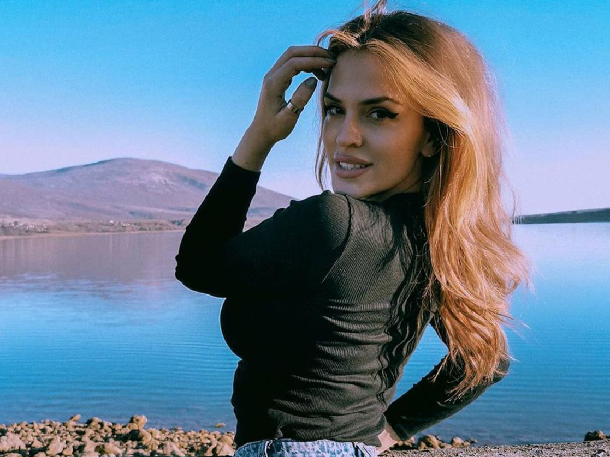
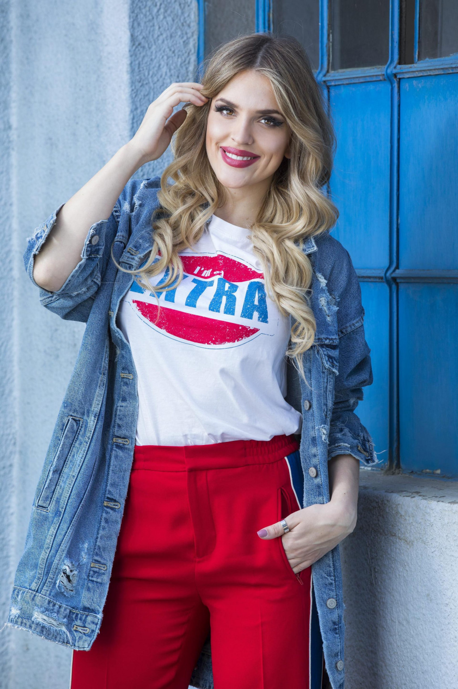

Ivana Lovrić rođena je 14. siječnja 1992. u Splitu. Pjeva od malih nogu, svirala je gitaru i nastupala na glazbenim festivalima. Osnovnu glazbenu školu završila je u Drnišu, a prirodoslovno-matematičku gimnaziju u Šibeniku. Zbog školovanja u tim krajevima mediji je često nazivaju Drnišankom, a katkad i Miljevčankom, po mjestu Miljevci kraj Drniša. Ima tri mlađe sestre i brata koji je puno mlađi od nje, pa se od malih nogu naučila brinuti o maloj djeci. Kao osnovnoškolka bila je velika obožavateljica Colonije i imala je sve njihove CD-ove.
Od 2010. živi u Zagrebu, gdje je upisala elektrotehniku na Tehničkom veleučilištu. Uz studij je počela graditi glazbenu karijeru. Njezin prvi javni nastup u životu bio je 2012. na Zagrebačkom festivalu u dvorani Vatroslava Lisinskog, gdje je s pjesmom "Nemoj mi reći" prvi put stala pred veliku publiku. Iste je godine Luka Nižetić pozvao mlade pjevačice da s njim snime duet. Javilo se više od 200 djevojaka, a izabrao je Ivanu. Zajedno su snimili pjesmu "Nek padne mrak", koja joj je otvorila vrata glazbene scene.
Nakon toga surađivala je s brojnim producentima. U zagrebačkom klubu Roko redovito je nastupala s Roko bendom, s kojim je snimila i spot za pjesmu "Imao si me". S poznatim tekstopiscem Fayom Buljubašićem osnovala je vlastiti bend, u kojem je ostala do sredine 2017. Snimala je i emisiju "Dudipedija" na portalu 24sata, u kojoj je zajedno s Dubravkom Miličićem putovala Hrvatskom. Nije sudjelovala ni u jednom televizijskom glazbenom natjecanju.
Prekretnica je stigla 1. lipnja 2017., kad ju je Boris Đurđević pozvao da postane nova pjevačica Colonije. Odlučio se po intuiciji, bez audicije. Ivana je pristala odmah, bez vremena za razmišljanje. Za medije je tada rekla da je bend čiji je bila fan sada njezin. Javnosti je službeno predstavljena 14. lipnja 2017., u dobi od 25 godina. Colonia je s njom već imala snimljenu prvu pjesmu, "Que sera", koja je izašla 27. srpnja 2017. Krajem studenoga iste godine diplomirala je na Tehničkom veleučilištu u Zagrebu i stekla zvanje inženjerke elektrotehnike. Na Instagramu je tom prilikom napisala da ima najcool zanimanja na svijetu.
Drugi singl, "Zadnja suza", izašao je 6. ožujka 2018. Spot je režirao Dario Radusin, a koreografiju je osmislio Neven Ivić. Snimljen je u jednostavnom bijelom prostoru, s naglaskom na Ivaninu izvedbu i ples. Već prije toga izašao je i spot za pjesmu "Maskenbal". Album "Nova era" objavljen je 1. lipnja 2018., točno godinu dana nakon ponude za ulazak u grupu. Bio je to Colonijin trinaesti album i Ivanin prvi. Glazbu, tekstove i produkciju potpisuje Boris Đurđević, a album donosi 15 pjesama, među kojima su "Que sera", "Zadnja suza", "Alarmantno", "Ljetni dan", "Maskenbal" i "Melem". Tekst pjesme "Alarmantno" napisala je Valerija Đurđević. "Ljetni dan" postao je sedmi singl s albuma, a spot je 2019. snimljen na Marini Novi u Novom Vinodolskom, opet u režiji Darija Radusina.
U ljeto 2020. izašao je singl "Doza", vraćanje u osamdesete i synth-pop zvuk. Ivana je u spotu nosila fitness odjeću tog doba, a Boris je koristio svoju originalnu glazbenu opremu iz početaka. Pjesma je uživo izvedena na CMC festivalu u Vodicama 5. rujna 2020. Slijedio je "Manijak", s kojim su Ivana i Boris nastupili na 68. Zagrebačkom festivalu, čije je održavanje zbog odgode preseljeno u proljeće 2021. Radusin je spot zamislio kao modernu akcijsku verziju para Bonnie i Clyde, u kojem su Ivana i glumac Sandro Stanojević bili bjegunci, a Boris policajac. Spot za pjesmu "Sama", predstavljenu na CMC festivalu 2021., nastavio je priču iz prva dva spota. U studenome 2021. izašla je pjesma "Nijanse crvene", a nešto ranije i "Ruši se klub". Godine 2022. grupa je otišla na koncertnu turneju u Australiju.

Ivana je u prosincu 2023. na Instagramu objavila da se zaručila. Suprug joj je fitness trener Matija Jakšić, s kojim se vjenčala u crkvi u Dalmaciji u krugu obitelji, a proslava je održana u ožujku 2024. u jednom zagrebačkom klubu. Da čeka prvo dijete, obznanila je na koncertu u zagrebačkoj Areni. Kći Eli rođena je u lipnju 2024. Nakon poroda Ivana je neko vrijeme pauzirala s nastupima.
Na scenu se vratila u lipnju 2025. novim ljetnim singlom "Meduza", s kojim je Colonia najavila povratak i koncerte diljem Hrvatske i regije. Spot je opet režirao Dario Radusin. U razgovoru za Story rekla je da joj Eli dobro podnosi život među ljudima i da uživa u novom ritmu. Iste je godine s Borisom gostovala i u jutarnjem programu bosanskohercegovačke radiotelevizije BHRT.
Na 73. Zagrebačkom festivalu Ivana je s Coloniom 17. travnja 2026. u Mozaik event centru izvela pjesmu "Još malo", svoj četvrti nastup grupe na tom festivalu. Za portal festivala rekla je da joj Zagrebački festival ima posebno značenje jer se upravo na njemu 2012. prvi put pojavila pred publikom. Pjesmu je opisala kao poziv na ples, bez pretenzija na dubokoumnost. Ivana je u travnju rekla da grupa ima pjesama za cijeli novi album, ali da ništa ne obećavaju dok ne budu sigurni.